Mindful Coding Cats
Mindful Coding CatsGames With a Higher Purpose
Yu Ming Creative Coding Class
💻 Some student projects use keyboard controls or a webcam and work best on a computer. You can still browse the projects on your phone.
Click on each picture to play a game. Many games have a quote from their creator about why they made their game.
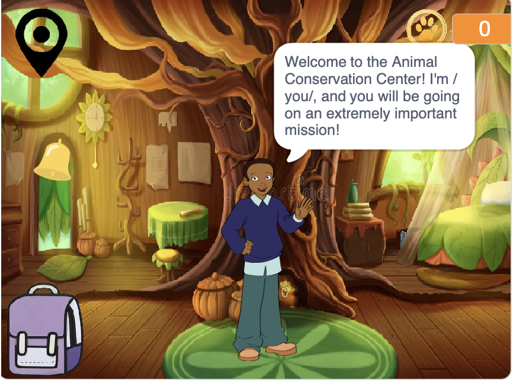
“ The mass extinction is the issue that we are addressing. We care about this issue because the pace of how fast animals are going extinct is alarming, and it needs to be told. The animals affect our planet, and we must try our best to conserve them.”
Play on Scratch →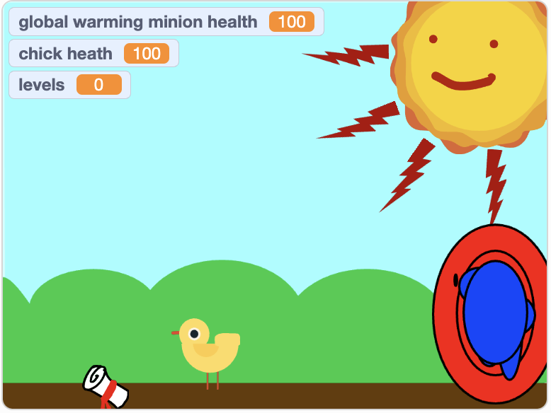
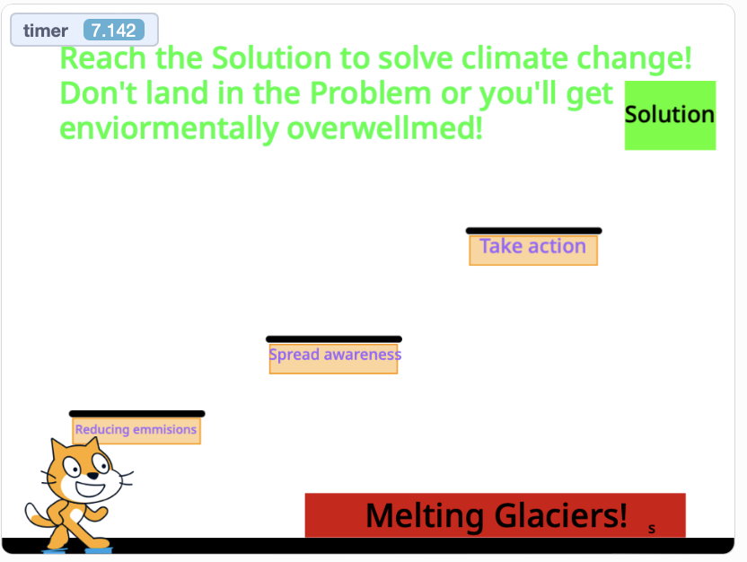
“ My game is about climate change, which I care about because it is eventually make it very hard to live on earth.”
Play on Scratch →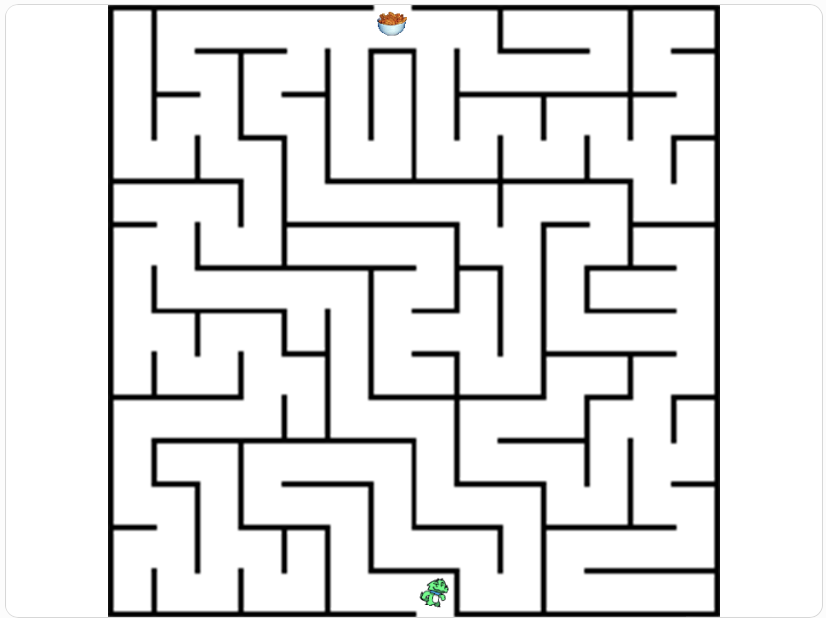
“Its about getting hunger points so your not hungry. i care about this issue because some people don't have food”
Play on Scratch →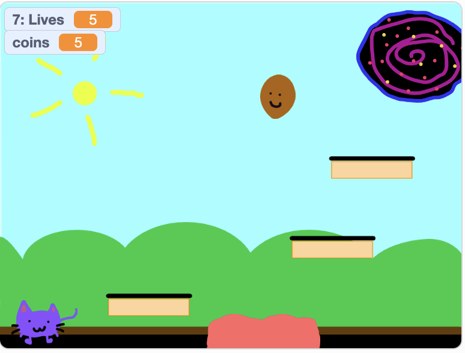
“ It is about planting trees. It is important because trees play a big part of our health.”
Play on Scratch →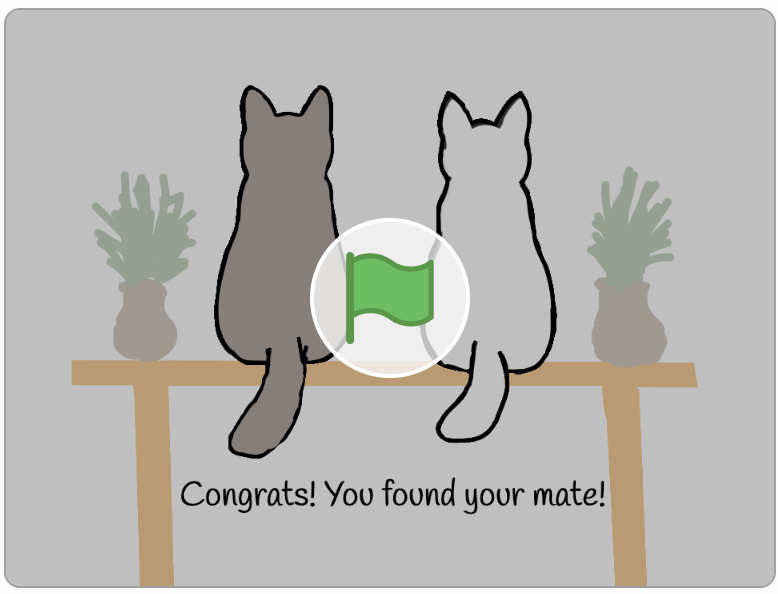
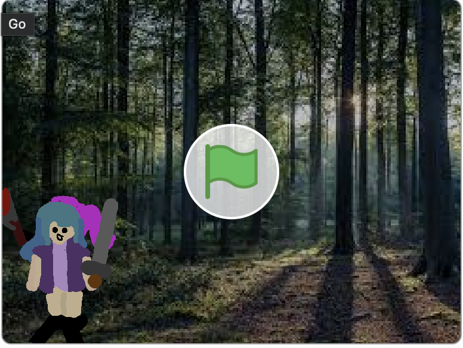
WARNING: This game has a sensitive topic of death. DO NOT CLICK if this is a trigger.
“To stop people from dying, my group made a series of games to show dangerous things that you should avoid doing.”
Play on Scratch →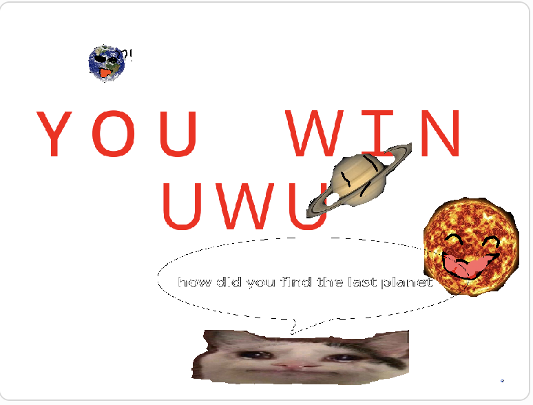
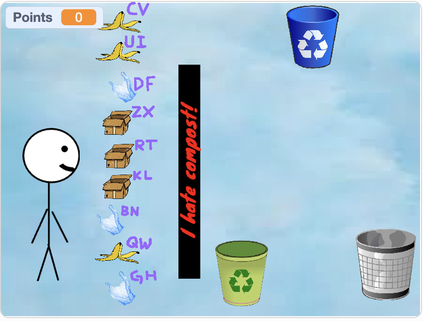
“ Sorting your trash into the right bin/Trash issues”
Play on Scratch →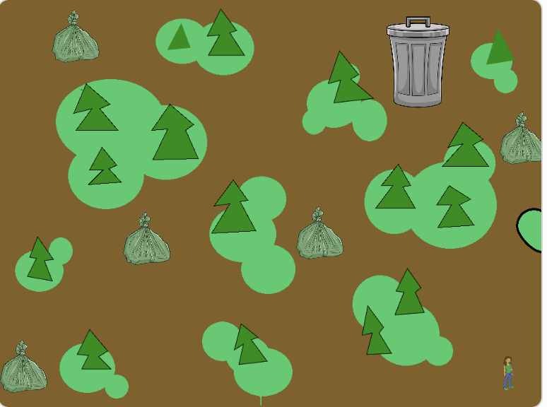
“my game is about trash, i think that if people keep on littering, the world will DIE”
Play on Scratch →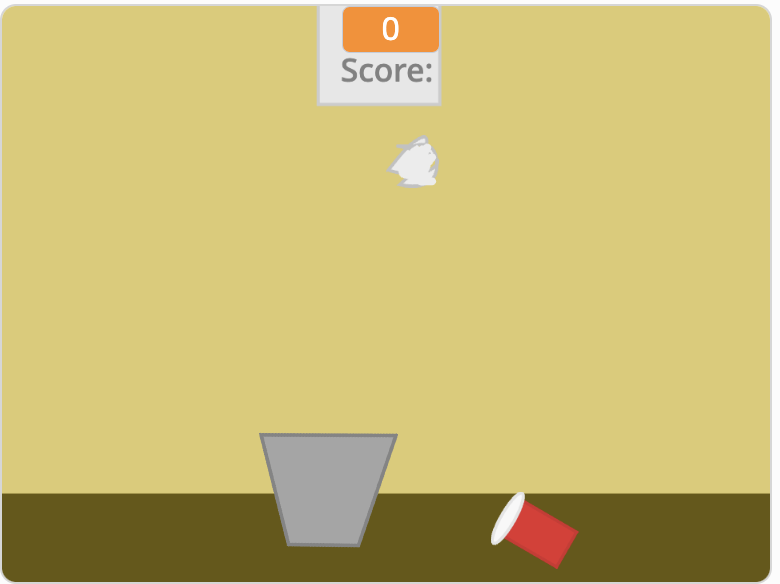
“My game is about trash cleanup and not to litter. It matters to me because I think littering is really very super duper bad, because the animals could die and the Earth could die”
Play on Scratch →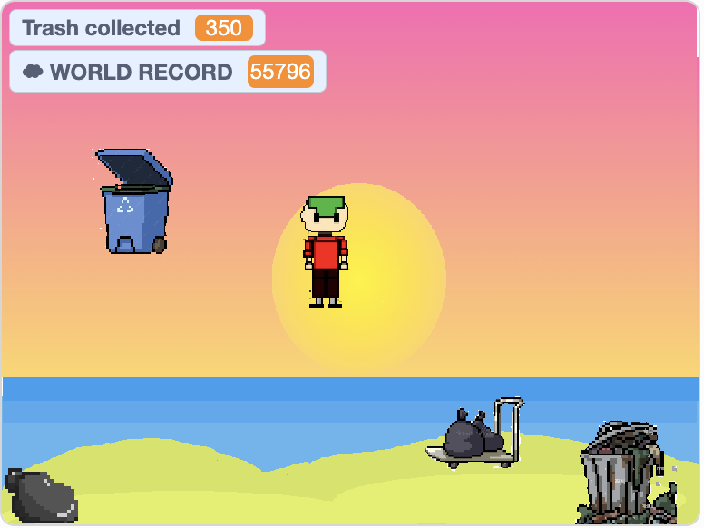
“ This game is about collecting trash from the ocean. I care about it because I don't want our planet to be polluted and for the sea animals to die off.
Play on Scratch →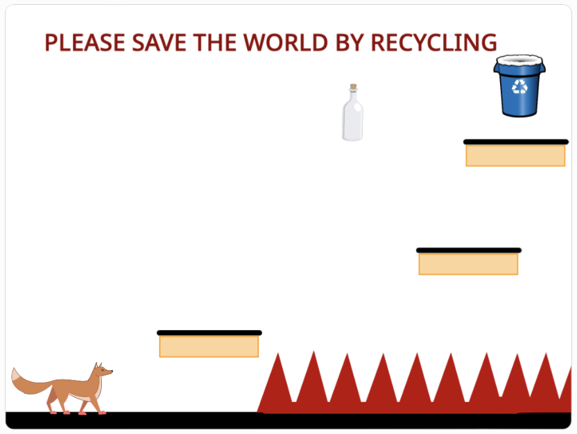
“ Recycling, I care about recycling because it is good for nature.”
Play on Scratch →These games were created by students in Teacher Lana’s coding classes, inspired by things they care about. 💜